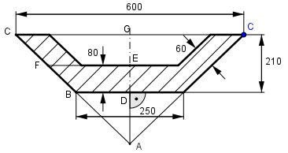

Aufgabe 159 Wie groß ist die schraffierte Fläche A?

Strahlensatz: 300 AD + 210 ----- = ------------ 125 AD 300 * AD = 125 * AD + 125 * 210 |-125AD 175AD = 26 250 |:175 AD = 150 mm Satz von Pythagoras im Dreieck AGC: AC2 = 3002 + (210 + 150)2 AC2 = 90 000 + 129 600 AC2 = 219 600 |√ AC = 468,6 mm Strahlensatz: 210 + 150 300 ------------ = ----- 150 + 80 EF 360 * EF = 230 * 300 |:360 EF = 191,7 mm Strahlensatz: AC 300 --------- = ----- AC – FC EF 468,6 300 ------------- = -------- 468,6 - FC 191,7 191,7 * 468,6 = 300 * 468,6 – 300 * FC |+300FC 300FC + 191,7 * 468,6 = 300 * 468,6 |-191,7*468,6 300FC = 108,3 * 468,6 | :300 FC = 169,2 mm A = Trapez + 2 * Parallelogramm 2 * EF + 250 Trapez = ---------------- * 80 = 2 2 * 191,7 + 250 = ------------------ * 80 = 25 336 mm2 2 2 * Parallelogramm = = 2 * FC * 60 = 2 * 169,2 * 60 mm2 = 20 304 mm2 A = 25 336 mm2 + 20 304 mm2 = 45 640 mm2 = = 456,4 cm2